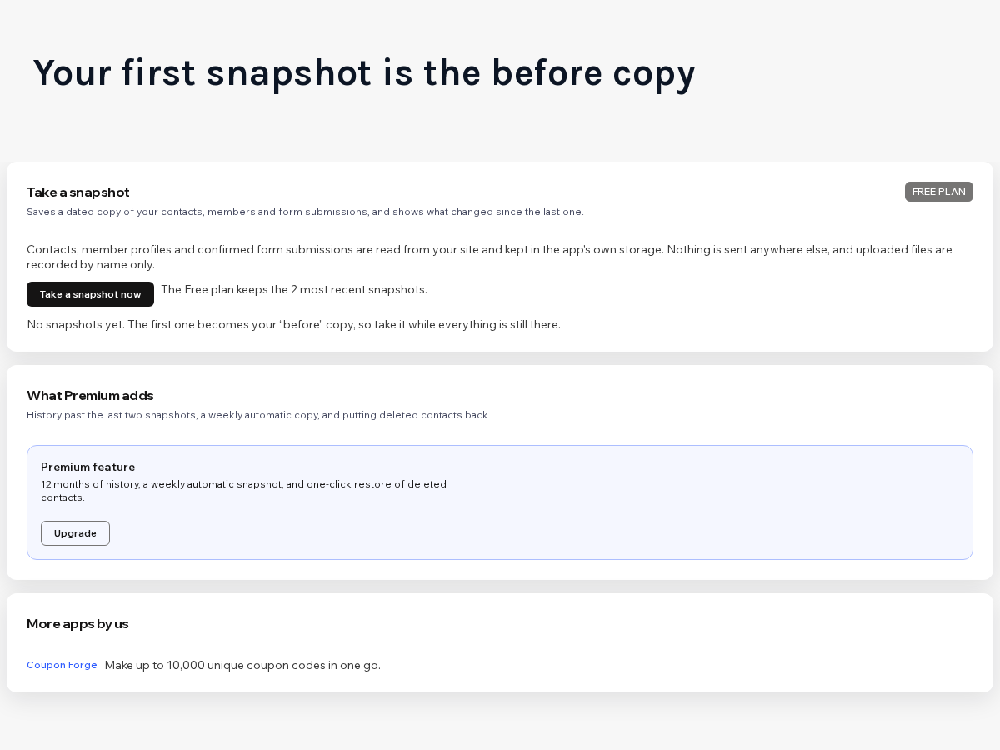

Contacts & Members Backup
Snapshot your contacts and members, restore them
- Contacts, members and form answers in one copy
- See who was added, removed or changed
- Download any snapshot as a CSV
- Put deleted contacts back in one click

What it does
Contacts can be exported by hand, but there is no backup and no undo. Delete a contact by mistake, or restore a deleted site, and the records do not come back with it.
This app takes a dated snapshot of your contact list, your members and your form submissions, and keeps it in the app's own storage on your site. Take one before a cleanup.
Every snapshot is compared with the one before it: how many contacts were added, removed and changed since last time. A row that says "3 removed" is the one you open first.
Download any snapshot as a CSV, and the columns open in Excel: names, e-mails, phones, companies, labels, join dates and form answers. Files uploaded with a form are listed by name and link only.
Premium puts deleted contacts back. Pick a snapshot, the app lists the contacts your list is missing now, and one click re-creates them with the name, e-mail, phone, company and job title they had. Premium keeps a year of history and takes one automatic snapshot a week, the first time you open the page after seven days.
Free keeps the two most recent snapshots, so you always have a before and an after.
Snapshots stay on your site. No outside service ever sees them.
Price
Free
Premium
$6/month, or $5/month billed yearly ($60/year). 12 months of history, weekly automatic snapshots, restore of deleted contacts